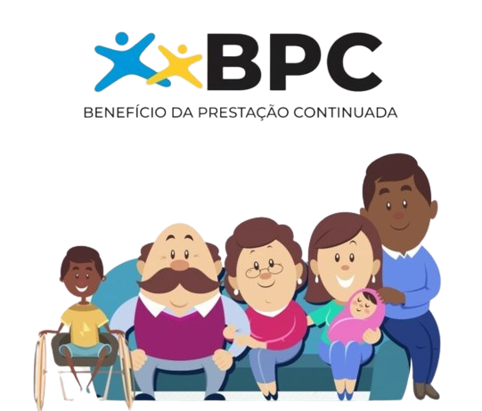

Direitos da Pessoa com TEA
Compreender os direitos das pessoas com Transtorno do Espectro Autista (TEA) é essencial para garantir sua inclusão e qualidade de vida. Isso envolve acesso à saúde, educação adequada e proteção social, assegurando igualdade de oportunidades e dignidade para todos. Abaixo estão alguns desses direitos:
Isenções fiscais
No Brasil, pessoas com transtorno do espectro autista (TEA) podem obter isenção de Imposto sobre Produtos Industrializados (IPI) e Imposto sobre Operações Financeiras (IOF) na compra de carros. A isenção de IPI é concedida a cada 3 anos para um único carro, enquanto motoristas profissionais (taxistas) podem solicitá-la a cada 2 anos. O benefício é limitado a carros com motor de até 2.000 cilindradas, com no mínimo 4 portas e movidos a combustível renovável, sistema reversível de combustão, híbrido ou elétrico. Já a isenção de IOF é aplicável apenas uma vez e se aplica a automóveis de passageiros de até 127 HP de potência bruta.
Além da mobilidade, esses benefícios também visam promover a inclusão social e a autonomia das pessoas com deficiência, incluindo aquelas com transtorno do espectro autista (TEA), contribuindo para uma vida mais independente e conectada.
Benefício BPC
Além dos benefícios fiscais, as crianças diagnosticadas com TEA podem solicitar o BPC da Lei Orgânica da Assistência Social (LOAS). Este benefício é destinado a pessoas consideradas incapazes de se manterem sozinhas e cuja renda por pessoa da família seja inferior a um 1/4 do salário mínimo vigente.
Em 2024, com o salário mínimo em R$ 1.412, a renda por pessoa da família não pode ser superior a R$ 3.531. Além disso, é necessário um laudo médico e uma avaliação conjunta, que inclui uma avaliação social realizada pelo Serviço Social do INSS e uma avaliação médica realizada pela Perícia Médica Federal.

Carteira de Identificação
A Carteira de Identificação da Pessoa com Transtorno do Espectro Autista (CIPTEA) é um documento que possibilita a identificação e prioridade no atendimento em serviços públicos e privados para pessoas com autismo. Ela foi criada pela Lei n. 13.977/20, também conhecida como Lei Romeo Mion, e é válida em todo o território brasileiro1.
Como solicitar a CIPTEA?
Para obter a CIPTEA, siga os passos abaixo:
Requerimento: É necessário preencher um requerimento, que pode ser obtido nos órgãos responsáveis ou online.
Relatório médico: Acompanhe o requerimento com um relatório médico que contenha a indicação do código da Classificação Estatística Internacional de Doenças e Problemas Relacionados à Saúde (CID).
Documentos pessoais: Apresente uma foto 3x4, RG, CPF e comprovante de residência.
Benefícios: A CIPTEA contém informações de identificação da pessoa com autismo, contato de emergência e, se aplicável, informações do representante legal ou cuidador.
Utilização da CIPTEA
A CIPTEA é válida em diversos contextos, incluindo serviços de saúde, educação, assistência social e estabelecimentos privados como supermercados, bancos, farmácias, bares e restaurantes. Ela traz mais segurança e autonomia aos beneficiários do serviço3.
Transporte Gratuito
A Lei 8.899/94 garante a gratuidade no transporte interestadual à pessoa autista que comprove renda de até dois salários mínimos. A solicitação é feita através do Centro de Referência de Assistência Social (CRAS).
Diagnóstico Precoce
A Lei Berenice Piana (12.764/12) determina o direito dos autistas a um diagnóstico precoce, tratamento, terapias e medicamento pelo Sistema Único de Saúde; o acesso à educação e à proteção social; ao trabalho e a serviços que propiciem a igualdade de oportunidades. Esta lei também estipula que a pessoa com transtorno do espectro autista é considerada pessoa com deficiência, para todos os efeitos legais.